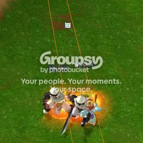

อ่า แมวขยันจังเรย จ๊อบ34แล้วด้วยแหน่ะ แถมยังมีเวลามาทำ
ดูดีมากมาย ^^ สู้ๆ ว่างๆซิปมาคุยบ้างนะ มะกล้าซิปไป มะได้คุยกานนานแล้ว- ..-
ดูดีมากมาย ^^ สู้ๆ ว่างๆซิปมาคุยบ้างนะ มะกล้าซิปไป มะได้คุยกานนานแล้ว- ..-
http://eco.froztic.in.th/archive/ecofanclub/
http://eco.froztic.in.th/archive/ecofanclub/viewtopic.php?f=15&t=15926
plus เขียน:อ่า แมวขยันจังเรย จ๊อบ34แล้วด้วยแหน่ะ แถมยังมีเวลามาทำ
ดูดีมากมาย ^^ สู้ๆ ว่างๆซิปมาคุยบ้างนะ มะกล้าซิปไป มะได้คุยกานนานแล้ว- ..-
onizuka115 เขียน:ขอถามเรื่องเกี่ยวกะ Bonus point นิสนุงนะคับ
สมมุตินะคับ ค่า DEX เป็น 20+3 งี้ แล้ว Bonus Dex มานอยู่ที่ 27 อ่ะ
หมายความว่า...เราต้องอัพ DEX เพิ่มอีก 4 รึว่า 7 เลยอ่ะคับ ถึงจะได้ Bonus อ่ะ
แหะๆ งงมะ ... อย่างงนะ ... เพราะผมก้องง ... งง
:lol: :lol: :lol: :lol: :lol: :lol:
meowpukpui เขียน:แวะมาทักทาย เลเวลเท่าไรกันแล้วค่ะ ทุกคน
LUMINA เขียน:อยากเล่นพระมั่งครับ อยากถามว่า
พระ Hp 1500 ตอน Lv65 ควรลง Vit ขนาดไหนเอ่ย ?
เอาสัก 1400 ก็ได้แล้วใส่เสื้อ+7 เอา ^^
จะให้แฟนเล่นพระมาสิง BP เก็บเวลอิอิ
ตอนนี้พระ 47/45 ยังอัพงูๆปลาๆอยู่เลย
ว่าจะให้แฟนรีทิ้งแล้วอัพแบบที่คุณแมวบอก
